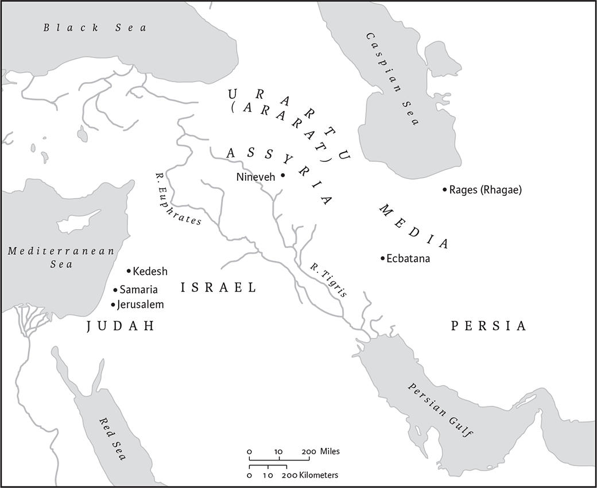

(A) Books and Additions To Esther and Daniel That are In The Roman Catholic, Greek, and Slavonic Bibles
Name and Canonical Status
The book is named for its principal character, Tobit. It is not included in the Jewish or Protestant canons, though it is canonical in the Roman Catholic and Orthodox Churches and acknowledged in Protestant tradition as part of the Apocrypha. The Anglican Church recognizes Tobit as scripture for the purpose of edification and liturgy.
Authorship, Text, and Date of Composition
The author of the book is unknown. Although the original language was likely Aramaic or possibly Hebrew, only fragments of that text have survived. The translation below is based primarily on the Greek text of Codex Sinaiticus (sometimes referred to as G2); what is missing in this text (from 4.7–19b and 13.6i–10b) is filled in from other manuscripts. Other versions attest a shorter Greek recension (G1), preserved in several manuscripts, as well as various translations into other languages. Five fragments, one in Hebrew and four in Aramaic, were found among the Dead Sea Scrolls (4Q196–4Q200); these tend to resemble the text of G1 rather than G2; however, they provide insufficient witness for determining which, if either, was the original. The book likely dates to sometime in the third or possibly early second century bce; its place of composition remains unknown, with plausible suggestions including the eastern Diaspora, Egypt, and Israel.
Citations of Tobit appear in the early church fathers; for example, Polycarp, bishop of Smyrna (ca. 80–155) quotes Tob 4.10 in his Letter to the Philippians 10.2: “Almsgiving delivers from death.” Jerome, who prepared the Latin (Vulgate), states that he translated Tobit from Aramaic rather than from Greek. The suggestion that Rom 9.18 is an allusion to Tob 4.19 is unlikely.
Contents and Structure
After the Assyrian conquest of the Northern Kingdom of Israel in 722 bce, Tobit, his wife Anna, and his son Tobias (Heb/Aram “Tobiah”) were exiled from their home in Galilee to Assyria. There Tobit, like Joseph (in Gen 39–50), Mordecai (in the book of Esther), and Daniel (in the book of Daniel), found himself in the service of a foreign ruler, as an officer in the court of the Assyrian king Shalmaneser. Like those characters, this pious Israelite too was tested: Shalmaneser's successor removed Tobit from his official position and then persecuted him for his insistence on burying the unattended corpses of his fellow Jews. Finally, one evening, following yet another burial, Tobit was blinded by bird droppings that fell into his eyes. Dependent on others, including his wife, for economic support, and following an argument with her in which she questioned the value of his piety, Tobit prayed for death. At the same time his relative Sarah was also praying for death. The demon Asmodeus had killed each of her seven successive grooms on their wedding night. To resolve these improbable situations, the angel Raphael, in disguise as Tobias's traveling companion, escorts the young man first to Media to exorcise the demon and marry Sarah and then back to Nineveh to cure Tobit.
The complex plot is tied together by the parallel situations of Tobit and Sarah, prayers of praise and references to almsgiving, and frequent supernatural events. Its humorous aspects—from the angel in disguise to the attack by a fish—make the stories of Tobit and Sarah almost farcical and so prevent the book from becoming tragic or maudlin. Readers familiar with biblical literature will recognize familiar motifs and themes: wisdom sayings; the comparison of Sarah to the Sarah of Genesis (their beauty, inability to conceive, sexual attention from inappropriate partners, difficult relations with female slaves, and miraculous solutions to their fertility problems); the search for a bride for Isaac (Gen 24); the successes and trials of the Jew in the royal court (Joseph, Daniel, Mordecai); the problems of life in the Diaspora; Job's trials; the role of angels; the centrality of Jerusalem; the fulfillment of prophecy; and the importance of charity. The numerous personal prayers, similar to those found in the stories of Judith, Daniel (including the Additions), the Greek Additions to Esther, and elsewhere in postexilic Jewish literature, emphasize the universal authority and righteousness of God.
Interpretation
Combining ethical exhortation and prayers with broad humor, a rollicking plot, and vivid characters, the book of Tobit is both entertaining and edifying. Classified variously as a folktale, wisdom tale, travel story, romance, comedy, and novella, it combines the traits of all these genres; Tobit is best grouped with such Second Temple novellas as Esther (with the Additions), Daniel (with the Additions), Judith, 3 Maccabees, and Joseph and Aseneth. It offers its Jewish readers guidelines on how to preserve their identity in Diaspora contexts; it gives theologians a view of a God who tests the faithful, responds to prayers, and redeems the covenant community; and it provides historians information about family life, gender roles, travel, burial and eating customs, and medicine in the postexilic period.
Where Temple sacrifice is unavailable and the people are scattered, the story insists that Jews maintain their identity not only through piety and practice but also through strong bonds between parents and children, between husbands and wives, and with family members and fellow Jews. For example, the first chapter includes many kinship terms (e.g., “descendants,” “tribe,” “brother,” “father,” “son,” “family,” “kindred,” “nephew”). To preserve the community, Tobit insists that his son imitate Abraham, Isaac, and Jacob, who “took wives from among their kindred” (4.12–13). Further, the book stresses the importance of the Jerusalem Temple, the following of the commandments, and the presence of the “merciful God” (3.11 cf. 11.17), the “God of our ancestors” (8.5), “who lives forever” and whose “kingdom lasts throughout the ages” (13.1). Although the character Tobit gives voice to what is sometimes called Deuteronomic theology, which states that the sinful suffer and the good are rewarded, the plot belies this claim: good people, such as Sarah and Tobit himself, do suffer, and sinful people, such as the Assyrian kings, thrive. Tobit's wife Anna presents a view more compatible with Ecclesiastes or Job: she bitterly asks her blind husband, “Where are your acts of charity? Where are your righteous deeds?” (2.14).
The book also displays connections to well-known folktale motifs, including the dangerous bride, the monster in the nuptial chamber, the supernatural being in disguise, the miraculous animal, and the grateful dead. Characters from the Aramaic Words of Ahikar, known from the Elephantine papyri (fifth century bce) as well as later Syriac, Slavonic, and other texts, make personal appearances in Tobit, where they are identified as Israelites. Tobit may also draw plot motifs from Homer's Odyssey and Sophocles's Antigone.
Amy-Jill Levine
1
This book tells the story of Tobit son of Tobiel son of Hananiel son of Aduel son of Gabael son of Raphael son of Raguel of the descendantsa of Asiel, of the tribe of Naphtali, 2who in the days of King Shalmaneserb of the Assyrians was taken into captivity from Thisbe, which is to the south of Kedesh Naphtali in Upper Galilee, above Asher toward the west, and north of Phogor.
3I, Tobit, walked in the ways of truth and righteousness all the days of my life. I performed many acts of charity for my kindred and my people who had gone with me in exile to Nineveh in the land of the Assyrians. 4When I was in my own country, in the land of Israel, while I was still a young man, the whole tribe of my ancestor Naphtali deserted the house of David and Jerusalem. This city had been chosen from among all the tribes of Israel, where all the tribes of Israel should offer sacrifice and where the temple, the dwelling of God, had been consecrated and established for all generations forever.
5All my kindred and our ancestral house of Naphtali sacrificed to the calfa that King Jeroboam of Israel had erected in Dan and on all the mountains of Galilee. 6But I alone went often to Jerusalem for the festivals, as it is prescribed for all Israel by an everlasting decree. I would hurry off to Jerusalem with the first fruits of the crops and the firstlings of the flock, the tithes of the cattle, and the first shearings of the sheep. 7I would give these to the priests, the sons of Aaron, at the altar; likewise the tenth of the grain, wine, olive oil, pomegranates, figs, and the rest of the fruits to the sons of Levi who ministered at Jerusalem. Also for six years I would save up a second tenth in money and go and distribute it in Jerusalem. 8A third tenthb I would give to the orphans and widows and to the converts who had attached themselves to Israel. I would bring it and give it to them in the third year, and we would eat it according to the ordinance decreed concerning it in the law of Moses and according to the instructions of Deborah, the mother of my father Tobiel,c for my father had died and left me an orphan. 9When I became a man I married a woman,d a member of our own family, and by her I became the father of a son whom I named Tobias.
10After I was carried away captive to Assyria and came as a captive to Nineveh, everyone of my kindred and my people ate the food of the Gentiles, 11but I kept myself from eating the food of the Gentiles. 12Because I was mindful of God with all my heart, 13the Most High gave me favor and good standing with Shalmaneser,e and I used to buy everything he needed. 14Until his death I used to go into Media, and buy for him there. While in the country of Media I left bags of silver worth ten talents in trust with Gabael, the brother of Gabri. 15But when Shalmanesere died, and his son Sennacherib reigned in his place, the highways into Media became unsafe and I could no longer go there.
16In the days of Shalmanesera I performed many acts of charity to my kindred, those of my tribe. 17I would give my food to the hungry and my clothing to the naked; and if I saw the dead body of any of my people thrown out behind the wall of Nineveh, I would bury it. 18I also buried any whom King Sennacherib put to death when he came fleeing from Judea in those days of judgment that the king of heaven executed upon him because of his blasphemies. For in his anger he put to death many Israelites; but I would secretly remove the bodies and bury them. So when Sennacherib looked for them he could not find them. 19Then one of the Ninevites went and informed the king about me, that I was burying them; so I hid myself. But when I realized that the king knew about me and that I was being searched for to be put to death, I was afraid and ran away. 20Then all my property was confiscated; nothing was left to me that was not taken into the royal treasury except my wife Anna and my son Tobias.
21But not fortyb days passed before two of Sennacherib'sc sons killed him, and they fled to the mountains of Ararat, and his son Esarhaddond reigned after him. He appointed Ahikar, the son of my brother Hanaele over all the accounts of his kingdom, and he had authority over the entire administration. 22Ahikar interceded for me, and I returned to Nineveh. Now Ahikar was chief cup-bearer, keeper of the signet, and in charge of administration of the accounts under King Sennacherib of Assyria; so Esar-haddond reappointed him. He was my nephew and so a close relative.
2
Then during the reign of Esar-haddond I returned home, and my wife Anna and my son Tobias were restored to me. At our festival of Pentecost, which is the sacred festival of weeks, a good dinner was prepared for me and I reclined to eat. 2When the table was set for me and an abundance of food placed before me, I said to my son Tobias, “Go, my child, and bring whatever poor person you may find of our people among the exiles in Nineveh, who is wholeheartedly mindful of God,f and he shall eat together with me. I will wait for you, until you come back.” 3So Tobias went to look for some poor person of our people. When he had returned he said, “Father!” And I replied, “Here I am, my child.” Then he went on to say, “Look, father, one of our own people has been murdered and thrown into the market place, and now he lies there strangled.” 4Then I sprang up, left the dinner before even tasting it, and removed

The geography of Tobit.
the bodya from the squareb and laid ita in one of the rooms until sunset when I might bury it.a5When I returned, I washed myself and ate my food in sorrow. 6Then I remembered the prophecy of Amos, how he said against Bethel,c
“Your festivals shall be turned into mourning,
and all your songs into lamentation.”
And I wept.
7When the sun had set, I went and dug a grave and buried him. 8And my neighbors laughed and said, “Is he still not afraid? He has already been hunted down to be put to death for doing this, and he ran away; yet here he is again burying the dead!” 9That same night I washed myself and went into my courtyard and slept by the wall of the courtyard; and my face was uncovered because of the heat. 10I did not know that there were sparrows on the wall; their fresh droppings fell into my eyes and produced white films. I went to physicians to be healed, but the more they treated me with ointments the more my vision was obscured by the white films, until I became completely blind. For four years I remained unable to see. All my kindred were sorry for me, and Ahikar took care of me for two years before he went to Elymais.
11At that time, also, my wife Anna earned money at women's work. 12She used to send what she made to the owners and they would pay wages to her. One day, the seventh of Dystrus, when she cut off a piece she had woven and sent it to the owners, they paid her full wages and also gave her a young goat for a meal. 13When she returned to me, the goat began to bleat. So I called her and said, “Where did you get this goat? It is surely not stolen, is it? Return it to the owners; for we have no right to eat anything stolen.” 14But she said to me, “It was given to me as a gift in addition to my wages.” But I did not believe her, and told her to return it to the owners. I became flushed with anger against her over this. Then she replied to me, “Where are your acts of charity? Where are your righteous deeds? These things are known about you!”a
3
Then with much grief and anguish of heart I wept, and with groaning began to pray:
2“You are righteous, O Lord,
and all your deeds are just;
all your ways are mercy and truth;
you judge the world.b
3And now, O Lord, remember me
and look favorably upon me.
Do not punish me for my sins
and for my unwitting offenses
and those that my ancestors committed before you.
They sinned against you,
4and disobeyed your commandments.
So you gave us over to plunder, exile, and death,
to become the talk, the byword, and an object of reproach
among all the nations among whom you have dispersed us.
5And now your many judgments are true
in exacting penalty from me for my sins.
For we have not kept your commandments
and have not walked in accordance with truth before you.
6So now deal with me as you will;
command my spirit to be taken from me,
so that I may be released from the face of the earth and become dust.
For it is better for me to die than to live,
because I have had to listen to undeserved insults,
and great is the sorrow within me.
Command, O Lord, that I be released from this distress;
release me to go to the eternal home,
and do not, O Lord, turn your face away from me.
For it is better for me to die
than to see so much distress in my life
and to listen to insults.”
7On the same day, at Ecbatana in Media, it also happened that Sarah, the daughter of Raguel, was reproached by one of her father's maids. 8For she had been married to seven husbands, and the wicked demon Asmodeus had killed each of them before they had been with her as is customary for wives. So the maid said to her, “You are the one who killsa your husbands! See, you have already been married to seven husbands and have not borne the name ofb a single one of them. 9Why do you beat us? Because your husbands are dead? Go with them! May we never see a son or daughter of yours!”
10On that day she was grieved in spirit and wept. When she had gone up to her father's upper room, she intended to hang herself. But she thought it over and said, “Never shall they reproach my father, saying to him, ‘You had only one beloved daughter but she hanged herself because of her distress.’ And I shall bring my father in his old age down in sorrow to Hades. It is better for me not to hang myself, but to pray the Lord that I may die and not listen to these reproaches anymore.” 11At that same time, with hands outstretched toward the window, she prayed and said,
“Blessed are you, merciful God!
Blessed is your name forever;
let all your works praise you forever.
12And now, Lord,c I turn my face to you,
and raise my eyes toward you.
13Command that I be released from the earth
and not listen to such reproaches any more.
14You know, O Master, that I am innocent
of any defilement with a man,
15and that I have not disgraced my name
or the name of my father in the land of my exile.
I am my father's only child;
he has no other child to be his heir;
and he has no close relative or other kindred
for whom I should keep myself as wife.
Already seven husbands of mine have died.
Why should I still live?
But if it is not pleasing to you, O Lord, to take my life,
hear me in my disgrace.”
16At that very moment, the prayers of both of them were heard in the glorious presence of God. 17So Raphael was sent to heal both of them: Tobit, by removing the white films from his eyes, so that he might see God's light with his eyes; and Sarah, daughter of Raguel, by giving her in marriage to Tobias son of Tobit, and by setting her free from the wicked demon Asmodeus. For Tobias was entitled to have her before all others who had desired to marry her. At the same time that Tobit returned from the courtyard into his house, Sarah daughter of Raguel came down from her upper room.
4
That same day Tobit remembered the money that he had left in trust with Gabael at Rages in Media, 2and he said to himself, “Now I have asked for death. Why do I not call my son Tobias and explain to him about the money before I die?” 3Then he called his son Tobias, and when he came to him he said, “My son, when I die,a give me a proper burial. Honor your mother and do not abandon her all the days of her life. Do whatever pleases her, and do not grieve her in anything. 4Remember her, my son, because she faced many dangers for you while you were in her womb. And when she dies, bury her beside me in the same grave.
5“Revere the Lord all your days, my son, and refuse to sin or to transgress his commandments. Live uprightly all the days of your life, and do not walk in the ways of wrongdoing; 6for those who act in accordance with truth will prosper in all their activities. To all those who practice righteousnessb 7give alms from your possessions, and do not let your eye begrudge the gift when you make it. Do not turn your face away from anyone who is poor, and the face of God will not be turned away from you. 8If you have many possessions, make your gift from them in proportion; if few, do not be afraid to give according to the little you have. 9So you will be laying up a good treasure for yourself against the day of necessity. 10For almsgiving delivers from death and keeps you from going into the Darkness. 11Indeed, almsgiving, for all who practice it, is an excellent offering in the presence of the Most High.
12“Beware, my son, of every kind of fornication. First of all, marry a woman from among the descendants of your ancestors; do not marry a foreign woman, who is not of your father's tribe; for we are the descendants of the prophets. Remember, my son, that Noah, Abraham, Isaac, and Jacob, our ancestors of old, all took wives from among their kindred. They were blessed in their children, and their posterity will inherit the land. 13So now, my son, love your kindred, and in your heart do not disdain your kindred, the sons and daughters of your people, by refusing to take a wife for yourself from among them. For in pride there is ruin and great confusion. And in idleness there is loss and dire poverty, because idleness is the mother of famine.
14“Do not keep over until the next day the wages of those who work for you, but pay them at once. If you serve God you will receive payment. Watch yourself, my son, in everything you do, and discipline yourself in all your conduct. 15And what you hate, do not do to anyone. Do not drink wine to excess or let drunkenness go with you on your way. 16Give some of your food to the hungry, and some of your clothing to the naked. Give all your surplus as alms, and do not let your eye begrudge your giving of alms. 17Place your bread on the grave of the righteous, but give none to sinners. 18Seek advice from every wise person and do not despise any useful counsel. 19At all times bless the Lord God, and ask him that your ways may be made straight and that all your paths and plans may prosper. For none of the nations has understanding, but the Lord himself will give them good counsel; but if he chooses otherwise, he casts down to deepest Hades. So now, my child, remember these commandments, and do not let them be erased from your heart.
20“And now, my son, let me explain to you that I left ten talents of silver in trust with Gabael son of Gabrias, at Rages in Media. 21Do not be afraid, my son, because we have become poor. You have great wealth if you fear God and flee from every sin and do what is good in the sight of the Lord your God.”
5
Then Tobias answered his father Tobit, “I will do everything that you have commanded me, father; 2but how can I obtain the moneya from him, since he does not know me and I do not know him? What evidenceb am I to give him so that he will recognize and trust me, and give me the money? Also, I do not know the roads to Media, or how to get there.” 3Then Tobit answered his son Tobias, “He gave me his bond and I gave him my bond. Ic divided his in two; we each took one part, and I put one with the money. And now twenty years have passed since I left this money in trust. So now, my son, find yourself a trustworthy man to go with you, and we will pay him wages until you return. But get back the money from Gabael.”a
4So Tobias went out to look for a man to go with him to Media, someone who was acquainted with the way. He went out and found the angel Raphael standing in front of him; but he did not perceive that he was an angel of God. 5Tobiasb said to him, “Where do you come from, young man?” “From your kindred, the Israelites,” he replied, “and I have come here to work.” Then Tobiasc said to him, “Do you know the way to go to Media?” 6“Yes,” he replied, “I have been there many times; I am acquainted with it and know all the roads. I have often traveled to Media, and would stay with our kinsman Gabael who lives in Rages of Media. It is a journey of two days from Ecbatana to Rages; for it lies in a mountainous area, while Ecbatana is in the middle of the plain.” 7Then Tobias said to him, “Wait for me, young man, until I go in and tell my father; for I do need you to travel with me, and I will pay you your wages.” 8He replied, “All right, I will wait; but do not take too long.”
9So Tobiasc went in to tell his father Tobit and said to him, “I have just found a man who is one of our own Israelite kindred!” He replied, “Call the man in, my son, so that I may learn about his family and to what tribe he belongs, and whether he is trustworthy enough to go with you.”
10Then Tobias went out and called him, and said, “Young man, my father is calling for you.” So he went in to him, and Tobit greeted him first. He replied, “Joyous greetings to you!” But Tobit retorted, “What joy is left for me any more? I am a man without eyesight; I cannot see the light of heaven, but I lie in darkness like the dead who no longer see the light. Although still alive, I am among the dead. I hear people but I cannot see them.” But the young manc said, “Take courage; the time is near for God to heal you; take courage.” Then Tobit said to him, “My son Tobias wishes to go to Media. Can you accompany him and guide him? I will pay your wages, brother.” He answered, “I can go with him and I know all the roads, for I have often gone to Media and have crossed all its plains, and I am familiar with its mountains and all of its roads.”
11Then Tobitc said to him, “Brother, of what family are you and from what tribe? Tell me, brother.” 12He replied, “Why do you need to know my tribe?” But Tobitc said, “I want to be sure, brother, whose son you are and what your name is.” 13He replied, “I am Azariah, the son of the great Hananiah, one of your relatives.” 14Then Tobit said to him, “Welcome! God save you, brother. Do not feel bitter toward me, brother, because I wanted to be sure about your ancestry. It turns out that you are a kinsman, and of good and noble lineage. For I knew Hananiah and Nathan,d the two sons of Shemeliah,e and they used to go with me to Jerusalem and worshiped with me there, and were not led astray. Your kindred are good people; you come of good stock. Hearty welcome!”
15Then he added, “I will pay you a drachma a day as wages, as well as expenses for yourself and my son. So go with my son, 16anda I will add something to your wages.” Raphaelb answered, “I will go with him; so do not fear. We shall leave in good health and return to you in good health, because the way is safe.” 17So Tobitc said to him, “Blessings be upon you, brother.”
Then he called his son and said to him, “Son, prepare supplies for the journey and set out with your brother. May God in heaven bring you safely there and return you in good health to me; and may his angel, my son, accompany you both for your safety.”
Before he went out to start his journey, he kissed his father and mother. Tobit then said to him, “Have a safe journey.”
18But his motherd began to weep, and said to Tobit, “Why is it that you have sent my child away? Is he not the staff of our hand as he goes in and out before us? 19Do not heap money upon money, but let it be a ransom for our child. 20For the life that is given to us by the Lord is enough for us.” 21Tobitb said to her, “Do not worry; our child will leave in good health and return to us in good health. Your eyes will see him on the day when he returns to you in good health. Say no more! Do not fear for them, my sister. 22For a good angel will accompany him; his journey will be successful, and he will come back in good health.”
6
So she stopped weeping.
The young man went out and the angel went with him; 2and the dog came out with him and went along with them. So they both journeyed along, and when the first night overtook them they camped by the Tigris river. 3Then the young man went down to wash his feet in the Tigris river. Suddenly a large fish leaped up from the water and tried to swallow the young man's foot, and he cried out. 4But the angel said to the young man, “Catch hold of the fish and hang on to it!” So the young man grasped the fish and drew it up on the land. 5Then the angel said to him, “Cut open the fish and take out its gall, heart, and liver. Keep them with you, but throw away the intestines. For its gall, heart, and liver are useful as medicine.” 6So after cutting open the fish the young man gathered together the gall, heart, and liver; then he roasted and ate some of the fish, and kept some to be salted.
The two continued on their way together until they were near Media.e 7Then the young man questioned the angel and said to him, “Brother Azariah, what medicinal value is there in the fish's heart and liver, and in the gall?” 8He replied, “As for the fish's heart and liver, you must burn them to make a smoke in the presence of a man or woman afflicted by a demon or evil spirit, and every affliction will flee away and never remain with that person any longer. 9And as for the gall, anoint a person's eyes where white films have appeared on them; blow upon them, upon the white films, and the eyesa will be healed.”
10When he entered Media and already was approaching Ecbatana,b 11Raphael said to the young man, “Brother Tobias.” “Here I am,” he answered. Then Raphaelc said to him, “We must stay this night in the home of Raguel. He is your relative, and he has a daughter named Sarah. 12He has no male heir and no daughter except Sarah only, and you, as next of kin to her, have before all other men a hereditary claim on her. Also it is right for you to inherit her father's possessions. Moreover, the girl is sensible, brave, and very beautiful, and her father is a good man.” 13He continued, “You have every right to take her in marriage. So listen to me, brother; tonight I will speak to her father about the girl, so that we may take her to be your bride. When we return from Rages we will celebrate her marriage. For I know that Raguel can by no means keep her from you or promise her to another man without incurring the penalty of death according to the decree of the book of Moses. Indeed he knows that you, rather than any other man, are entitled to marry his daughter. So now listen to me, brother, and tonight we shall speak concerning the girl and arrange her engagement to you. And when we return from Rages we will take her and bring her back with us to your house.”
14Then Tobias said in answer to Raphael, “Brother Azariah, I have heard that she already has been married to seven husbands and that they died in the bridal chamber. On the night when they went in to her, they would die. I have heard people saying that it was a demon that killed them. 15It does not harm her, but it kills anyone who desires to approach her. So now, since I am the only son my father has, I am afraid that I may die and bring my father's and mother's life down to their grave, grieving for me—and they have no other son to bury them.”
16But Raphaelc said to him, “Do you not remember your father's orders when he commanded you to take a wife from your father's house? Now listen to me, brother, and say no more about this demon. Take her. I know that this very night she will be given to you in marriage. 17When you enter the bridal chamber, take some of the fish's liver and heart, and put them on the embers of the incense. An odor will be given off; 18the demon will smell it and flee, and will never be seen near her any more. Now when you are about to go to bed with her, both of you must first stand up and pray, imploring the Lord of heaven that mercy and safety may be granted to you. Do not be afraid, for she was set apart for you before the world was made. You will save her, and she will go with you. I presume that you will have children by her, and they will be as brothers to you. Now say no more!” When Tobias heard the words of Raphael and learned that she was his kinswoman,d related through his father's lineage, he loved her very much, and his heart was drawn to her.
7
Now when theya entered Ecbatana, Tobiasb said to him, “Brother Azariah, take me straight to our brother Raguel.” So he took him to Raguel's house, where they found him sitting beside the courtyard door. They greeted him first, and he replied, “Joyous greetings, brothers; welcome and good health!” Then he brought them into his house. 2He said to his wife Edna, “How much the young man resembles my kinsman Tobit!” 3Then Edna questioned them, saying, “Where are you from, brothers?” They answered, “We belong to the descendants of Naphtali who are exiles in Nineveh.” 4She said to them, “Do you know our kinsman Tobit?” And they replied, “Yes, we know him.” Then she asked them, “Is hec in good health?” 5They replied, “He is alive and in good health.” And Tobias added, “He is my father!” 6At that Raguel jumped up and kissed him and wept. 7He also spoke to him as follows, “Blessings on you, my child, son of a good and noble father!d O most miserable of calamities that such an upright and beneficent man has become blind!” He then embraced his kinsman Tobias and wept. 8His wife Edna also wept for him, and their daughter Sarah likewise wept. 9Then Raguelb slaughtered a ram from the flock and received them very warmly.
When they had bathed and washed themselves and had reclined to dine, Tobias said to Raphael, “Brother Azariah, ask Raguel to give me my kinswomane Sarah.” 10But Raguel overheard it and said to the lad, “Eat and drink, and be merry tonight. For no one except you, brother, has the right to marry my daughter Sarah. Likewise I am not at liberty to give her to any other man than yourself, because you are my nearest relative. But let me explain to you the true situation more fully, my child. 11I have given her to seven men of our kinsmen, and all died on the night when they went in to her. But now, my child, eat and drink, and the Lord will act on behalf of you both.” But Tobias said, “I will neither eat nor drink anything until you settle the things that pertain to me.” So Raguel said, “I will do so. She is given to you in accordance with the decree in the book of Moses, and it has been decreed from heaven that she be given to you. Take your kinswoman;e from now on you are her brother and she is your sister. She is given to you from today and forever. May the Lord of heaven, my child, guide and prosper you both this night and grant you mercy and peace.” 12Then Raguel summoned his daughter Sarah. When she came to him he took her by the hand and gave her to Tobias,f saying, “Take her to be your wife in accordance with the law and decree written in the book of Moses. Take her and bring her safely to your father. And may the God of heaven prosper your journey with his peace.” 13Then he called her mother and told her to bring writing material; and he wrote out a copy of a marriage contract, to the effect that he gave her to him as wife according to the decree of the law of Moses. 14Then they began to eat and drink.
15Raguel called his wife Edna and said to her, “Sister, get the other room ready, and take her there.” 16So she went and made the bed in the room as he had told her, and brought Saraha there. She wept for her daughter.a Then, wiping away the tears,b she said to her, “Take courage, my daughter; the Lord of heaven grant you joyc in place of your sorrow. Take courage, my daughter.” Then she went out.
8
When they had finished eating and drinking they wanted to retire; so they took the young man and brought him into the bedroom. 2Then Tobias remembered the words of Raphael, and he took the fish's liver and heart out of the bag where he had them and put them on the embers of the incense. 3The odor of the fish so repelled the demon that he fled to the remotest partsd of Egypt. But Raphael followed him, and at once bound him there hand and foot.
4When the parentse had gone out and shut the door of the room, Tobias got out of bed and said to Sarah,a “Sister, get up, and let us pray and implore our Lord that he grant us mercy and safety.” 5So she got up, and they began to pray and implore that they might be kept safe. Tobiasf began by saying,
“Blessed are you, O God of our ancestors,
and blessed is your name in all generations forever.
Let the heavens and the whole creation bless you forever.
6You made Adam, and for him you made his wife Eve
as a helper and support.
From the two of them the human race has sprung.
You said, ‘It is not good that the man should be alone;
let us make a helper for him like himself.’
7I now am taking this kinswoman of mine,
not because of lust,
but with sincerity.
Grant that she and I may find mercy
and that we may grow old together.”
8And they both said, “Amen, Amen.” 9Then they went to sleep for the night.
But Raguel arose and called his servants to him, and they went and dug a grave, 10for he said, “It is possible that he will die and we will become an object of ridicule and derision.” 11When they had finished digging the grave, Raguel went into his house and called his wife, 12saying, “Send one of the maids and have her go in to see if he is alive. But if he is dead, let us bury him without anyone knowing it.” 13So they sent the maid, lit a lamp, and opened the door; and she went in and found them sound asleep together. 14Then the maid came out and informed them that he was alive and that nothing was wrong. 15So they blessed the God of heaven, and Raguela said,
“Blessed are you, O God, with every pure blessing;
let all your chosen ones bless you.b
Let them bless you forever.
16Blessed are you because you have made me glad.
It has not turned out as I expected,
but you have dealt with us according to your great mercy.
17Blessed are you because you had compassion
on two only children.
Be merciful to them, O Master, and keep them safe;
bring their lives to fulfillment
in happiness and mercy.”
18Then he ordered his servants to fill in the grave before daybreak.
19After this he asked his wife to bake many loaves of bread; and he went out to the herd and brought two steers and four rams and ordered them to be slaughtered. So they began to make preparations. 20Then he called for Tobias and swore on oath to him in these words:c “You shall not leave here for fourteen days, but shall stay here eating and drinking with me; and you shall cheer up my daughter, who has been depressed. 21Take at once half of what I own and return in safety to your father; the other half will be yours when my wife and I die. Take courage, my child. I am your father and Edna is your mother, and we belong to you as well as to your wifed now and forever. Take courage, my child.”
9
Then Tobias called Raphael and said to him, 2“Brother Azariah, take four servants and two camels with you and travel to Rages. Go to the home of Gabael, give him the bond, get the money, and then bring him with you to the wedding celebration. 4For you know that my father must be counting the days, and if I delay even one day I will upset him very much. 3You are witness to the oath Raguel has sworn, and I cannot violate his oath.”e 5So Raphael with the four servants and two camels went to Rages in Media and stayed with Gabael. Raphaelf gave him the bond and informed him that Tobit's son Tobias had married and was inviting him to the wedding celebration. So Gabaelg got up and counted out to him the money bags, with their seals intact; then they loaded them on the camels.h 6In the morning they both got up early and went to the wedding celebration. When they came into Raguel's house they found Tobias reclining at table. He sprang up and greeted Gabael,i who wept and blessed him with the words, “Good and noble son of a father good and noble, upright and generous! May the Lord grant the blessing of heaven to you and your wife, and to your wife's father and mother. Blessed be God, for I see in Tobias the very image of my cousin Tobit.”
10
Now, day by day, Tobit kept counting how many days Tobiasa would need for going and for returning. And when the days had passed and his son did not appear, 2he said, “Is it possible that he has been detained? Or that Gabael has died, and there is no one to give him the money?” 3And he began to worry. 4His wife Anna said, “My child has perished and is no longer among the living.” And she began to weep and mourn for her son, saying, 5“Woe to me, my child, the light of my eyes, that I let you make the journey.” 6But Tobit kept saying to her, “Be quiet and stop worrying, my dear;b he is all right. Probably something unexpected has happened there. The man who went with him is trustworthy and is one of our own kin. Do not grieve for him, my dear;b he will soon be here.” 7She answered him, “Be quiet yourself! Stop trying to deceive me! My child has perished.” She would rush out every day and watch the road her son had taken, and would heed no one.c When the sun had set she would go in and mourn and weep all night long, getting no sleep at all.
Now when the fourteen days of the wedding celebration had ended that Raguel had sworn to observe for his daughter, Tobias came to him and said, “Send me back, for I know that my father and mother do not believe that they will see me again. So I beg of you, father, to let me go so that I may return to my own father. I have already explained to you how I left him.” 8But Raguel said to Tobias, “Stay, my child, stay with me; I will send messengers to your father Tobit and they will inform him about you.” 9But he said, “No! I beg you to send me back to my father.” 10So Raguel promptly gave Tobias his wife Sarah, as well as half of all his property: male and female slaves, oxen and sheep, donkeys and camels, clothing, money, and household goods. 11Then he saw them safely off; he embraced Tobiasd and said, “Farewell, my child; have a safe journey. The Lord of heaven prosper you and your wife Sarah, and may I see children of yours before I die.” 12Then he kissed his daughter Sarah and said to her, “My daughter, honor your father-in-law and your mother-in-law,e since from now on they are as much your parents as those who gave you birth. Go in peace, daughter, and may I hear a good report about you as long as I live.” Then he bade them farewell and let them go. Then Edna said to Tobias, “My child and dear brother, the Lord of heaven bring you back safely, and may I live long enough to see children of you and of my daughter Sarah before I die. In the sight of the Lord I entrust my daughter to you; do nothing to grieve her all the days of your life. Go in peace, my child. From now on I am your mother and Sarah is your beloved wife.b May we all prosper together all the days of our lives.” Then she kissed them both and saw them safely off. 13Tobias parted from Raguel with happiness and joy, praising the Lord of heaven and earth, King over all, because he had made his journey a success. Finally, he blessed Raguel and his wife Edna, and said, “I have been commanded by the Lord to honor you all the days of my life.”a
11
When they came near to Kaserin, which is opposite Nineveh, Raphael said, 2“You are aware of how we left your father. 3Let us run ahead of your wife and prepare the house while they are still on the way.” 4As they went on together Raphaelb said to him, “Have the gall ready.” And the dogc went along behind them.
5Meanwhile Anna sat looking intently down the road by which her son would come. 6When she caught sight of him coming, she said to his father, “Look, your son is coming, and the man who went with him!”
7Raphael said to Tobias, before he had approached his father, “I know that his eyes will be opened. 8Smear the gall of the fish on his eyes; the medicine will make the white films shrink and peel off from his eyes, and your father will regain his sight and see the light.”
9Then Anna ran up to her son and threw her arms around him, saying, “Now that I have seen you, my child, I am ready to die.” And she wept. 10Then Tobit got up and came stumbling out through the courtyard door. Tobias went up to him, 11with the gall of the fish in his hand, and holding him firmly, he blew into his eyes, saying, “Take courage, father.” With this he applied the medicine on his eyes, 12and it made them smart.a13Next, with both his hands he peeled off the white films from the corners of his eyes. Then Tobitb saw his son andd threw his arms around him, 14and he wept and said to him, “I see you, my son, the light of my eyes!” Then he said,
So Tobit went in rejoicing and praising God at the top of his voice. Tobias reported to his father that his journey had been successful, that he had brought the money, that he had married Raguel's daughter Sarah, and that she was, indeed, on her way there, very near to the gate of Nineveh.
16Then Tobit, rejoicing and praising God, went out to meet his daughter-in-law at the gate of Nineveh. When the people of Nineveh saw him coming, walking along in full vigor and with no one leading him, they were amazed. 17Before them all, Tobit acknowledged that God had been merciful to him and had restored his sight. When Tobit met Sarah the wife of his son Tobias, he blessed her saying, “Come in, my daughter, and welcome. Blessed be your God who has brought you to us, my daughter. Blessed be your father and your mother, blessed be my son Tobias, and blessed be you, my daughter. Come in now to your home, and welcome, with blessing and joy. Come in, my daughter.” So on that day there was rejoicing among all the Jews who were in Nineveh. 18Ahikar and his nephew Nadab were also present to share Tobit's joy. With merriment they celebrated Tobias's wedding feast for seven days, and many gifts were given to him.a
12
When the wedding celebration was ended, Tobit called his son Tobias and said to him, “My child, see to paying the wages of the man who went with you, and give him a bonus as well.” 2He replied, “Father, how much shall I pay him? It would do no harm to give him half of the possessions brought back with me. 3For he has led me back to you safely, he cured my wife, he brought the money back with me, and he healed you. How much extra shall I give him as a bonus?” 4Tobit said, “He deserves, my child, to receive half of all that he brought back.” 5So Tobiasb called him and said, “Take for your wages half of all that you brought back, and farewell.”
6Then Raphaelb called the two of them privately and said to them, “Bless God and acknowledge him in the presence of all the living for the good things he has done for you. Bless and sing praise to his name. With fitting honor declare to all people the deedsc of God. Do not be slow to acknowledge him. 7It is good to conceal the secret of a king, but to acknowledge and reveal the works of God, and with fitting honor to acknowledge him. Do good and evil will not overtake you. 8Prayer with fastingd is good, but better than both is almsgiving with righteousness. A little with righteousness is better than wealth with wrongdoing.e It is better to give alms than to lay up gold. 9For almsgiving saves from death and purges away every sin. Those who give alms will enjoy a full life, 10but those who commit sin and do wrong are their own worst enemies.
11“I will now declare the whole truth to you and will conceal nothing from you. Already I have declared it to you when I said, ‘It is good to conceal the secret of a king, but to reveal with due honor the works of God.’ 12So now when you and Sarah prayed, it was I who brought and readf the record of your prayer before the glory of the Lord, and likewise whenever you would bury the dead. 13And that time when you did not hesitate to get up and leave your dinner to go and bury the dead, 14I was sent to you to test you. And at the same time God sent me to heal you and Sarah your daughter-in-law. 15I am Raphael, one of the seven angels who stand ready and enter before the glory of the Lord.”
16The two of them were shaken; they fell face down, for they were afraid. 17But he said to them, “Do not be afraid; peace be with you. Bless God forevermore. 18As for me, when I was with you, I was not acting on my own will, but by the will of God. Bless him each and every day; sing his praises. 19Although you were watching me, I really did not eat or drink anything—but what you saw was a vision. 20So now get up from the ground,a and acknowledge God. See, I am ascending to him who sent me. Write down all these things that have happened to you.” And he ascended. 21Then they stood up, and could see him no more. 22They kept blessing God and singing his praises, and they acknowledged God for these marvelous deeds of his, when an angel of God had appeared to them.
13
Then Tobitb said:
“Blessed be God who lives forever,
because his kingdomc lasts throughout all ages.
2For he afflicts, and he shows mercy;
he leads down to Hades in the lowest regions of the earth,
and he brings up from the great abyss,d
and there is nothing that can escape his hand.
3Acknowledge him before the nations, O children of Israel;
for he has scattered you among them.
4He has shown you his greatness even there.
Exalt him in the presence of every living being,
because he is our Lord and he is our God;
he is our Father and he is God forever.
5He will afflicte you for your iniquities,
but he will again show mercy on all of you.
He will gather you from all the nations
among whom you have been scattered.
6If you turn to him with all your heart and with all your soul,
to do what is true before him,
then he will turn to you
and will no longer hide his face from you.
So now see what he has done for you;
acknowledge him at the top of your voice.
Bless the Lord of righteousness,
and exalt the King of the ages.f
In the land of my exile I acknowledge him,
and show his power and majesty to a nation of sinners:
‘Turn back, you sinners, and do what is right before him;
perhaps he may look with favor upon you and show you mercy.’
7As for me, I exalt my God,
and my soul rejoices in the King of heaven.
8Let all people speak of his majesty,
and acknowledge him in Jerusalem.
9O Jerusalem, the holy city,
he afflictedg you for the deeds of your hands,h
but will again have mercy on the children of the righteous.
10Acknowledge the Lord, for he is good,a
and bless the King of the ages,
so that his tentb may be rebuilt in you in joy.
May he cheer all those within you who are captives,
and love all those within you who are distressed,
to all generations forever.
11A bright light will shine to all the ends of the earth;
many nations will come to you from far away,
the inhabitants of the remotest parts of the earth to your holy name,
bearing gifts in their hands for the King of heaven.
Generation after generation will give joyful praise in you;
the name of the chosen city will endure forever.
12Cursed are all who speak a harsh word against you;
cursed are all who conquer you
and pull down your walls,
all who overthrow your towers
and set your homes on fire.
But blessed forever will be all who revere you.c
13Go, then, and rejoice over the children of the righteous,
for they will be gathered together
and will praise the Lord of the ages.
14Happy are those who love you,
and happy are those who rejoice in your prosperity.
Happy also are all people who grieve with you
because of your afflictions;
for they will rejoice with you
and witness all your glory forever.
15My soul blessesd the Lord, the great King!
16For Jerusalem will be builte as his house for all ages.
How happy I will be if a remnant of my descendants should survive
to see your glory and acknowledge the King of heaven.
The gates of Jerusalem will be built with sapphire and emerald,
and all your walls with precious stones.
The towers of Jerusalem will be built with gold,
and their battlements with pure gold.
The streets of Jerusalem will be paved with ruby and with stones of Ophir.
17The gates of Jerusalem will sing hymns of joy,
and all her houses will cry, ‘Hallelujah!
Blessed be the God of Israel!’
and the blessed will bless the holy name forever and ever.”
14
So ended Tobit's words of praise. 2Tobitf died in peace when he was one hundred twelve years old, and was buried with great honor in Nineveh. He was sixty-twog years old when he lost his eyesight, and after regaining it he lived in prosperity, giving alms and continually blessing God and acknowledging God's majesty.
3When he was about to die, he called his son Tobias and the seven sons of Tobiasa and gave this command: “My son, take your children 4and hurry off to Media, for I believe the word of God that Nahum spoke about Nineveh, that all these things will take place and overtake Assyria and Nineveh. Indeed, everything that was spoken by the prophets of Israel, whom God sent, will occur. None of all their words will fail, but all will come true at their appointed times. So it will be safer in Media than in Assyria and Babylon. For I know and believe that whatever God has said will be fulfilled and will come true; not a single word of the prophecies will fail. All of our kindred, inhabitants of the land of Israel, will be scattered and taken as captives from the good land; and the whole land of Israel will be desolate, even Samaria and Jerusalem will be desolate. And the temple of God in it will be burned to the ground, and it will be desolate for a while.b
5“But God will again have mercy on them, and God will bring them back into the land of Israel; and they will rebuild the temple of God, but not like the first one until the period when the times of fulfillment shall come. After this they all will return from their exile and will rebuild Jerusalem in splendor; and in it the temple of God will be rebuilt, just as the prophets of Israel have said concerning it. 6Then the nations in the whole world will all be converted and worship God in truth. They will all abandon their idols, which deceitfully have led them into their error; 7and in righteousness they will praise the eternal God. All the Israelites who are saved in those days and are truly mindful of God will be gathered together; they will go to Jerusalem and live in safety forever in the land of Abraham, and it will be given over to them. Those who sincerely love God will rejoice, but those who commit sin and injustice will vanish from all the earth. 8,9So now, my children, I command you, serve God faithfully and do what is pleasing in his sight. Your children are also to be commanded to do what is right and to give alms, and to be mindful of God and to bless his name at all times with sincerity and with all their strength. So now, my son, leave Nineveh; do not remain here. 10On whatever day you bury your mother beside me, do not stay overnight within the confines of the city. For I see that there is much wickedness within it, and that much deceit is practiced within it, while the people are without shame. See, my son, what Nadab did to Ahikar who had reared him. Was he not, while still alive, brought down into the earth? For God repaid him to his face for this shameful treatment. Ahikar came out into the light, but Nadab went into the eternal darkness, because he tried to kill Ahikar. Because he gave alms, Ahikarc escaped the fatal trap that Nadab had set for him, but Nadab fell into it himself, and was destroyed. 11So now, my children, see what almsgiving accomplishes, and what injustice does—it brings death! But now my breath fails me.”
Then they laid him on his bed, and he died; and he received an honorable funeral. 12When Tobias's mother died, he buried her beside his father. Then he and his wife and childrend returned to Media and settled in Ecbatana with Raguel his father-in-law. 13He treated his parents-in-lawa with great respect in their old age, and buried them in Ecbatana of Media. He inherited both the property of Raguel and that of his father Tobit. 14He died highly respected at the age of one hundred seventeenb years. 15Before he died he heardc of the destruction of Nineveh, and he saw its prisoners being led into Media, those whom King Cyaxaresd of Media had taken captive. Tobiase praised God for all he had done to the people of Nineveh and Assyria; before he died he rejoiced over Nineveh, and he blessed the Lord God forever and ever. Amen.f